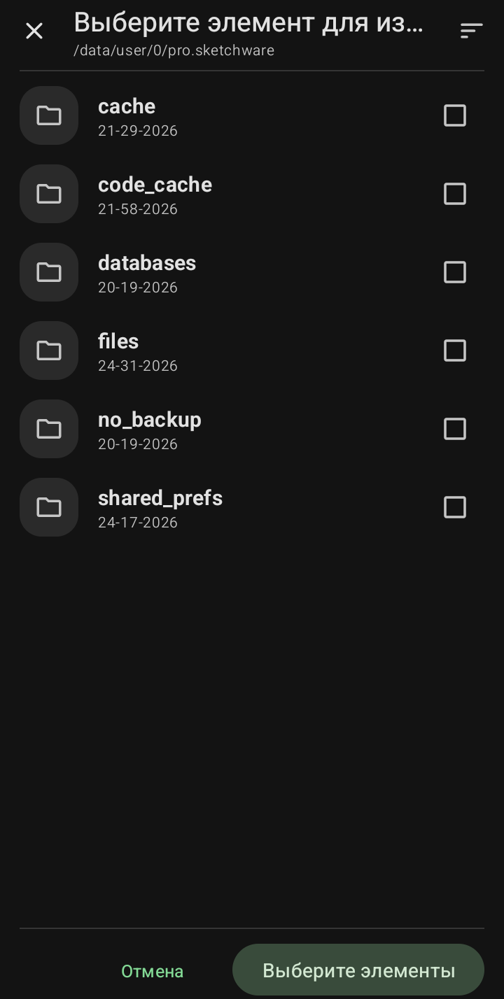

Рабочая директория (Файлы программы)

Это системная папка, где хранятся все данные Sketchware Pro. Сюда лучше не заходить без необходимости, но полезно знать, что здесь лежит.
·
cache:
Временные файлы.
·
code_cache:
Кэш скомпилированного кода.
·
databases:
Базы данных программы.
·
files:
Важные файлы конфигурации.
·
no_backup:
Файлы, которые не участвуют в резервном копировании.
·
shared_prefs:
Настройки приложения (сохраненные параметры).
Вот мы и прошлись по всем основным разделам интерфейса! Теперь вы знаете, где что находится. В следующей главе мы перейдем непосредственно к созданию первого проекта и рассмотрим редактор экрана (View) и редактор логики (Logic).